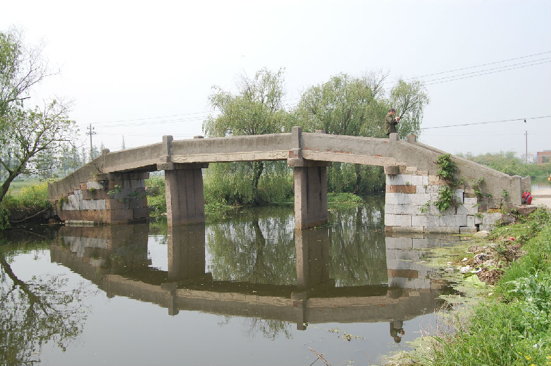

嘉兴市文物保护网 · 市级文物保护点 · 2020-11-06 · 原文

荷花村正兴桥位于嘉兴市秀洲区王江泾镇荷花村1组，又名沈水桥。据桥额小字载重建于民国24年（1935）。南北横跨河道，系三孔无栏梁式石板桥，全长约20米，宽2.18米，桥面和桥柱由四块石板并列组成，单板最大跨度5.64米，桥底距水面高度2.48米，南北落坡略呈喇叭状，北为10级石阶，南为9级石阶。东西有桥额“重建正兴桥”，旁镌刻小字“中华民国二十四年”。下有桥联，东侧为“春风野竹寻乌巷，夜月渔舟傍绿杨”；西侧为“足踏云根平步上，水溅柳汁染衣来”。东桥柱内侧有刻成长方形的框，框内刻字，无法辨识。正兴桥处在水上交通要道上，是当地重要的历史建筑，虽然建筑本身损害严重，但仍具较高的历史价值。2010年公布为嘉兴市文物保护点。